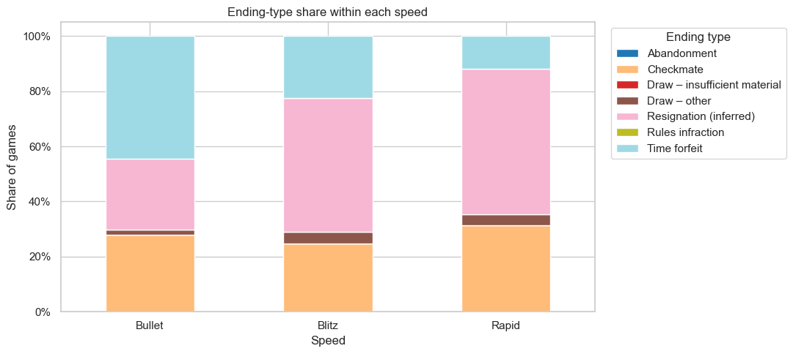
How games end depends on speed
Time forfeits decide 44.5% of Bullet games but only 22.4% of Blitz and 11.8% of Rapid games. Inferred resignations move the other way, rising from 25.8% in Bullet to 52.9% in Rapid, while checkmate stays between roughly a quarter and a third of games.
Because clock dynamics differ this much by speed, every analysis that follows is split by speed.
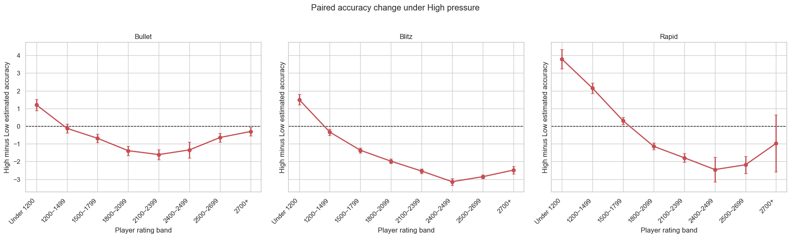
The raw pressure effect changes sign with rating
For the same player in the same game, we compare accuracy on moves made with at most 10% of the clock left against moves made with more than 30% left. The lowest rating bands actually score higher under pressure. The difference crosses zero near 1500 in Bullet and Blitz and near 1800 in Rapid, and is clearly negative above that.
Weak players plausibly reach severe time pressure mostly in positions that are already decided, where an engine records little further loss.
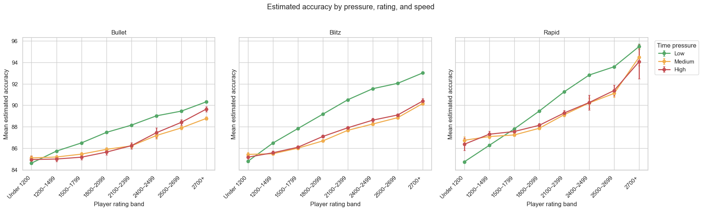
Accuracy rises with rating, but pressure opens a gap
Accuracy climbs steadily with rating at every pressure level. Above the lowest bands, the Low-pressure line (green) sits clearly above Medium and High, and that gap is widest in Blitz.
Medium and High pressure track each other closely, which suggests most of the damage is already done once a player drops below 30% of their clock.
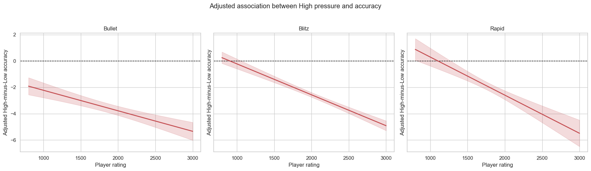
After adjustment, pressure hurts in every speed
Controlling for phase, colour, pre-move evaluation imbalance and rating gap, High pressure is linked to accuracy that is 3.47, 2.10 and 2.02 points lower at rating 1800 in Bullet, Blitz and Rapid.
The penalty deepens with rating, by 2.34, 3.52 and 4.34 points between ratings 1000 and 2500. Stronger players are still more accurate in absolute terms; the gap between their calm and pressured play is simply wider.
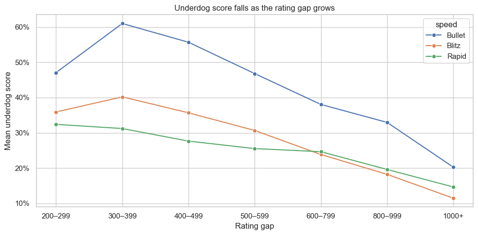
Underdogs score less as the gap grows
Across 80,992 games with a gap of at least 200 points, the lower-rated player's score falls steadily as the gap widens. Bullet underdogs do noticeably better than Blitz or Rapid underdogs at every gap, consistent with faster games being more chaotic.
This is why an opening cannot be judged by raw win rate: that would mostly recover the rating gap. The model behind the next figure removes this trend first.
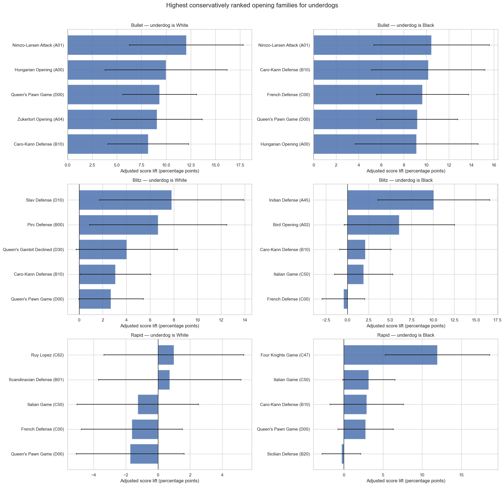
Some openings beat rating expectations
Each bar is the opening family's adjusted lift: how much better the underdog scored than the rating-only model predicted. Bullet gives the largest and most stable lifts, around 8 to 12 percentage points, led by the Nimzo-Larsen Attack (A01) for both colours.
Blitz lifts are smaller and less uniform. In Rapid, the Four Knights Game (C47) stands out for Black underdogs, while the leading White-underdog intervals all include zero. With 300 families screened, these are candidates for follow-up, not established effects.
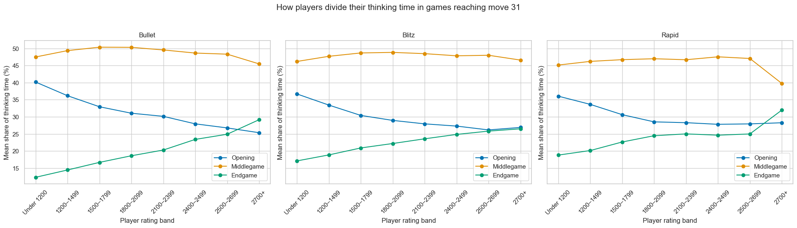
Weaker players spend more of their time early
Using only the 729,619 player-games that reach move 31, the middlegame takes the largest share of thinking time at every level. The opening share falls with rating while the endgame share rises.
The effect is strongest in Bullet, where the opening share drops by about 15 percentage points between the under-1200 and 2700+ bands.
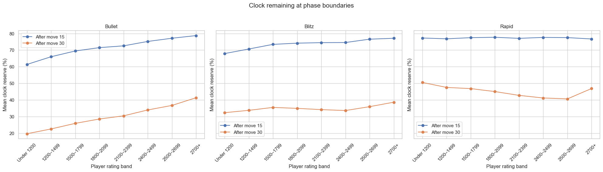
Clock discipline improves with rating only where the clock binds
In Bullet, the reserve after move 30 more than doubles from about 20% for the weakest players to 41% for the strongest. Blitz moves the same way over a narrower range.
Rapid breaks the pattern: the weakest band finishes the middlegame with more clock than most stronger bands. A ten-minute clock is rarely binding for weak players, whose games are usually decided tactically long before time matters.
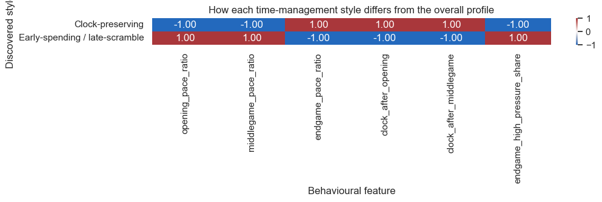
Two time-management styles
k-means clustering on six pacing features across 562,687 player-games finds two clear groups (silhouette 0.344, against 0.250 for the next best option).
The clock-preserving style (66.6% of player-games) plays the opening quickly and keeps 48.2% of its clock after move 30. The early-spending / late-scramble style (33.4%) keeps only 18.2% and plays 64.8% of its endgame moves under High pressure.
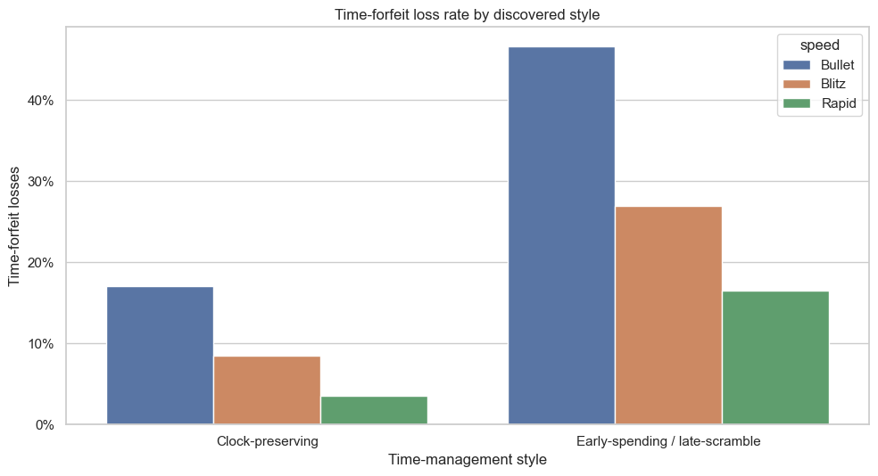
The styles predict who flags
Game result and termination were never shown to the clustering, so time-forfeit rates act as an outside check. The early-spending style loses on time in 46.6% of Bullet player-games against 17.1% for the clock-preserving style, and 26.9% against 8.5% in Blitz and 16.5% against 3.5% in Rapid.
That is a 2.7 to 4.7 times higher flagging rate in every speed.
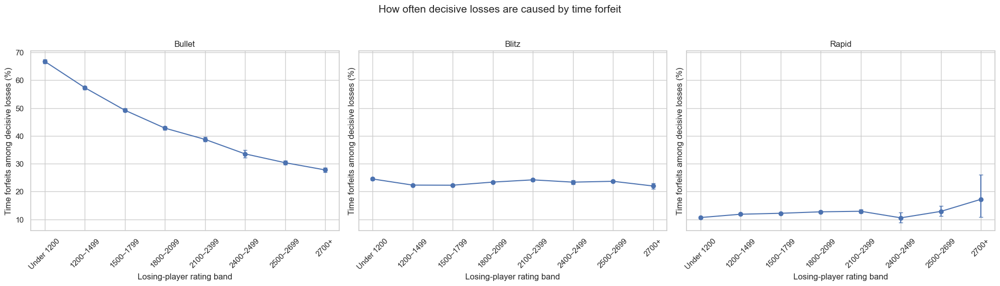
"Weaker players flag more" only holds in Bullet
In Bullet, the time-forfeit share of decisive losses falls steadily from 66.8% for under-1200 players to 27.8% for 2700+ players.
Blitz is flat at 22.0% to 24.5% across all eight bands, and Rapid stays between 10.5% and 12.9%. The apparent rise in the top Rapid band rests on only 93 decisive losses.
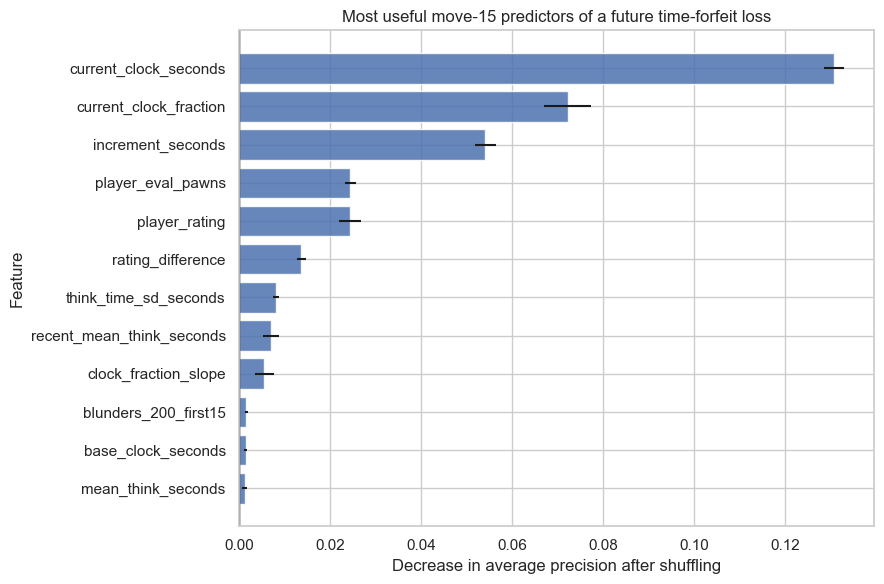
Predicting a flag at move 15
A gradient-boosted model that only sees what is known at move 15 reaches ROC AUC 0.747 on held-out games, against an 11.9% base rate. Its highest-risk 10% of players flag 38.1% of the time, 3.19 times the base rate.
Remaining clock time dominates. Ratings and time control alone give AUC 0.666, early clock behaviour lifts it to 0.734, and early evaluation and accuracy add almost nothing more.
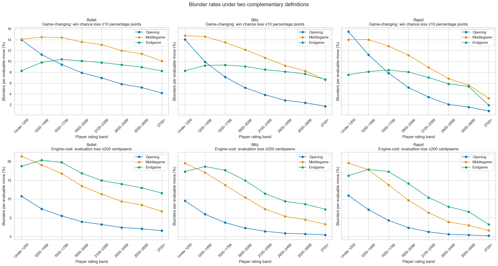
Two blunder definitions, two different stories
Both definitions flag almost the same share of moves, 9.36% and 9.29%, but about 36% of the moves each one labels are not labelled by the other.
Under the win-chance rule, the middlegame is the most error-prone phase. Under the centipawn rule, the endgame comes out highest for most bands. For Blitz players rated 1200–1499, for example, the centipawn endgame rate is 18.6%, while the win-chance rule puts the endgame lowest at 9.3%. Which phase looks worst depends on the metric, not the games.
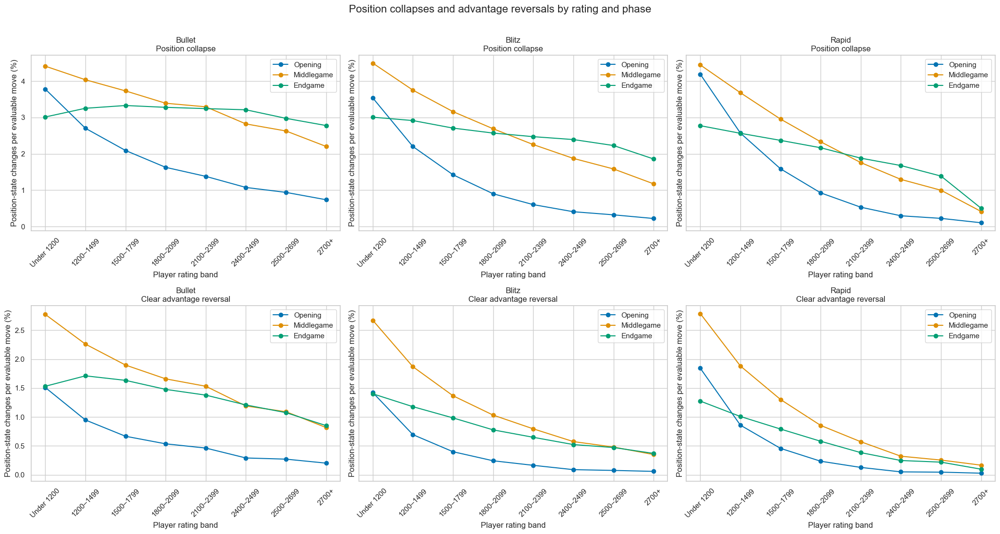
Stricter errors are rarer and peak in the middlegame
A position collapse, where a playable position becomes clearly lost, happens on 2.28% of plies. A clear advantage reversal happens on 0.88%.
Both peak in the middlegame for under-1200 players, at about 4.4% and 2.8%, and fall sharply with rating. As with blunders, the rating gradient is steepest in the opening, consistent with opening preparation being what separates rating bands most clearly: the median first game-changing blunder comes at move 7–8 for under-1200 players but at move 21 for 2700+ Blitz players.
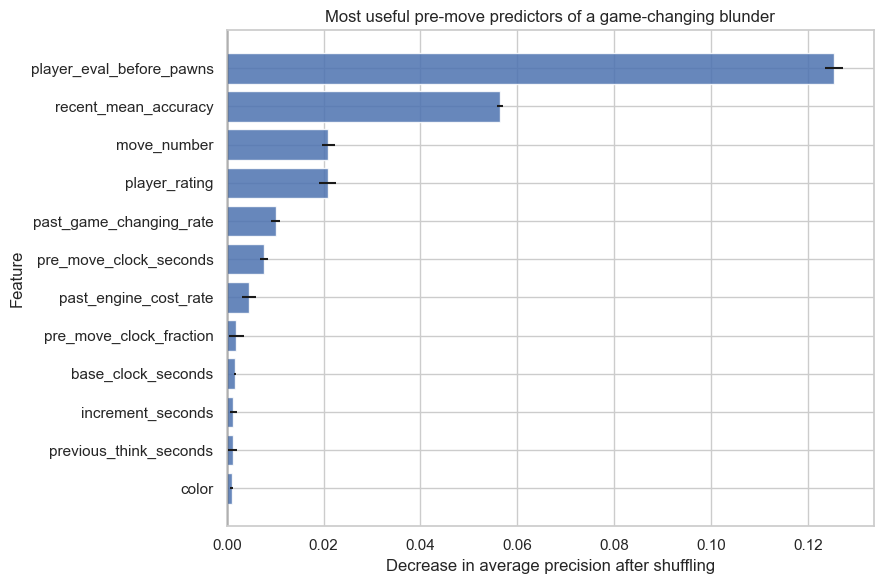
Predicting the next blunder
Using lagged features only, the next-move blunder model reaches ROC AUC 0.787 for game-changing blunders and 0.794 for engine-cost blunders, with the highest-risk decile at about three times the base rate.
Here the ordering flips: pre-move evaluation and recent accuracy lead, while adding the pre-move clock moves AUC by only 0.002.
Anomalies, observations and patterns
- Anomaly: the lowest-rated players are more accurate under severe time pressure in raw comparisons. This reverses once phase and position are controlled, because weak players tend to reach time trouble in positions that are already decided.
- Anomaly: two common blunder definitions agree on the overall rate (9.36% vs 9.29%) yet disagree on about a third of the moves they label, and they rank the game phases in opposite orders.
- Observation: the adjusted time-pressure penalty grows with rating, from at most 2.2 points at rating 1000 to between 3.7 and 4.6 points at rating 2500.
- Observation: unsupervised clustering finds two pacing styles, and the early-spending style flags 2.7 to 4.7 times as often, even though termination was never used to build the clusters.
- Pattern: the expected rating gradient in clock discipline holds only where the clock binds: strongly in Bullet, weakly in Blitz and not at all in Rapid. The termination data shows the same pattern.
- Pattern: clock state drives the multi-move time-forfeit forecast (AUC 0.747), while position state and recent form drive the next-move blunder forecast (AUC 0.787). Clock management, position quality and the definition of error behave as three separate axes of performance.